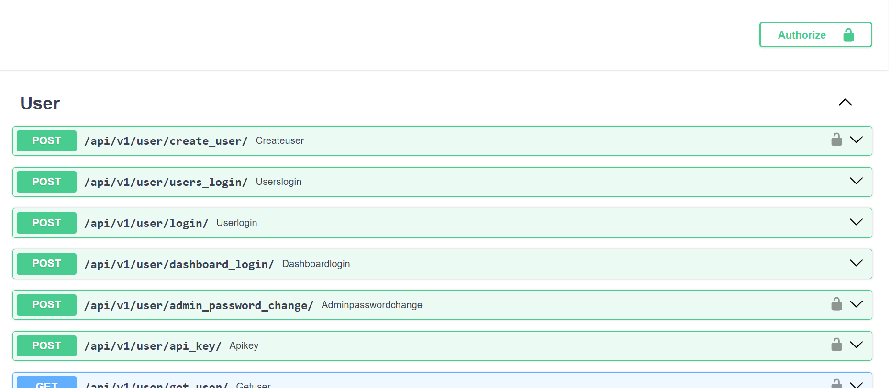
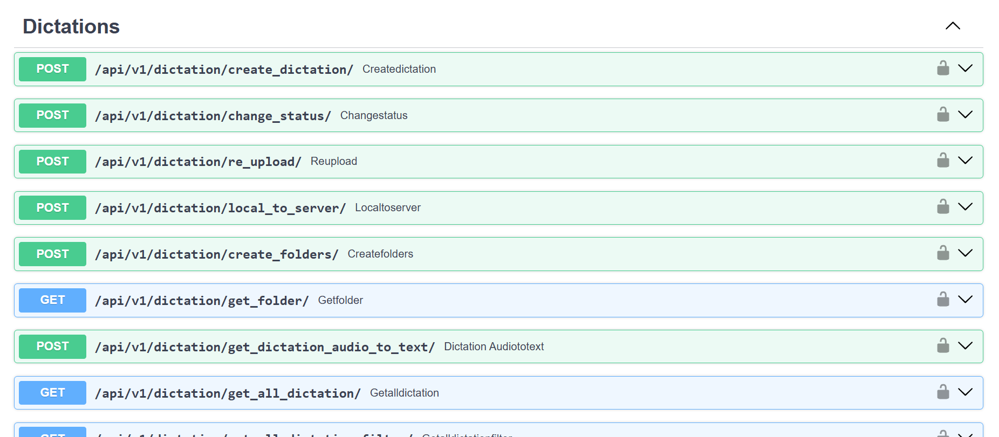
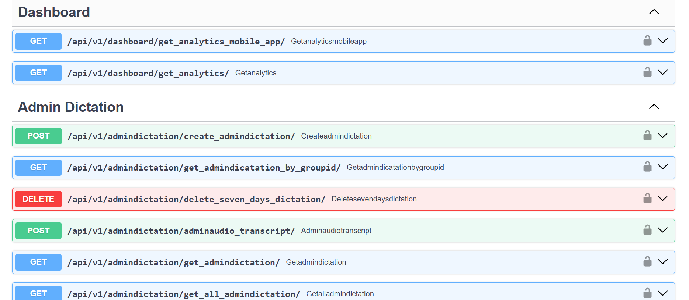

Project Overview
This is a scalable Speech-to-Text API that enables secure audio processing using the Whisper model. The system allows users to upload audio files, automatically stores them in Amazon S3, and generates accurate text transcriptions. It manages the complete workflow including audio upload, transcription processing, and history tracking. All audio metadata and extracted text are stored in PostgreSQL for efficient retrieval and analytics. Built with a modular architecture, the platform ensures secure storage, scalable processing, and easy management of user audio records with their corresponding transcripts.
Preview



Tech Stack
Python
FastAPI
PostgresSQL
Whisper AI
AWS Lightsail
AWS S3
Key Features
- Audio upload with secure storage in Amazon S3
- High-accuracy transcription using Whisper
- Transcript & metadata stored in PostgreSQL
- User audio history with text records
- Secure access with user-level isolation
- REST API for easy integration